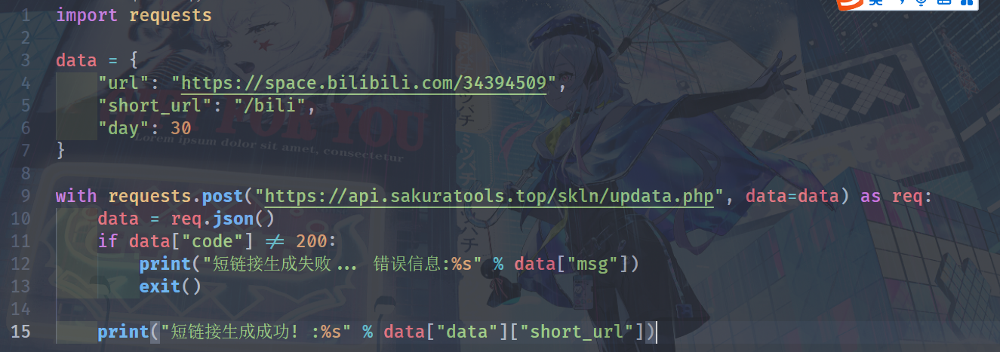

本站承诺完全使用本项目的开源代码，不会存储用户的任何信息。
{
"code": api 状态码
"msg": api 信息 错误时可以返回错误信息
}
code 错误码
200: api 请求成功(正常)
404: 不存在的 api
4000: 参数格式错误
4001: cookie 失效
4002: 第三方 api 错误
4003: api 错误
4004: 参数错误
1.1 短链接上传
本短链接利用了404错误重定向到重定向 api 后301重定向到长链接
可以自定义 skln.xyz/ 后的链接
生成的短链接格式 skln.xyz/ + 自定义值
最多有效天数30天, 过期不会删除直到有人重新上传
短链接上传
https://api.sakuratools.top/skln/updata.php
请求方式: GET/POST
请求参数:
url: 长链接
short_url: 短链接值 格式 / + 自定义值
day: 有效天数 最多30天
请求返回:
{
"code": api 状态码
"msg": api 信息 错误时可以返回错误信息
"data": {
"short_url": 生成的短链接
}
}
python demo:
1.2 短链接查询
短链接查询
https://api.sakuratools.top/skln/inquire.php
请求方式: GET/POST
请求参数:
short_url: 短链接值 不带 skln.xyz 需要/
请求返回:
{
"code": api 状态码
"msg": api 信息 错误时可以返回错误信息
"data": {
"url": 长链接
"short_url": 短链接值
"time": 创建时间戳
"endtime": 过期时间戳
"day": 有效天数
}
}
短链接重定向
https://api.sakuratools.top/skln/link.php
请求方式: GET/POST
请求参数:
short_url: 短链接值 不带 skln.xyz 需要/
请求返回:
不返回值重定向至长链接, 效果和短链接一样
2.1 pixiv
抓取于 https://www.vilipix.com/
数据0点更新均晚一天稳定榜单, 不包括r18
一次返回日周月三榜混合数据, 不重复抓取, 过了就没了
重点: 注意下载请求头携带 referer: https://www.vilipix.com/
重点: 务必处理下载时404, 把404图片改成 .png 图片就能正常下载
referer 和处理404都不能少, 没 referer 全部无法下载, 不处理404
无法下载 png 图片
下载即用, 简单脚本一键下载数据, 保存在脚本目录, 速度很快!!!
脚本源码在下面, 完全开源放心使用
每日 日周月三榜混合数据
https://api.sakuratools.top/pixiv/list.php
请求方式: GET/POST
请求参数:
shield: 屏蔽标签, 多个用","分割
date: 指定榜单日期, 可以先用获取今年可用日期列表的接口后从中选
请求返回:
{
"code": api 状态码
"msg": api 信息 错误时可以返回错误信息
"data": {
"day": "数据更新日期"
"list": [
{
"id": 图片id
"url" 图片原图 url
}
...
]
}
}
获取今年可用日期列表
https://api.sakuratools.top/pixiv/date.php
请求方式: GET/POST
请求返回:
{
"code": api 状态码
"msg": api 信息 错误时可以返回错误信息
"data": [
一年榜单日期
]
}
从本站日周月三榜中随机图片
https://api.sakuratools.top/pixiv/random.php
请求方式: GET/POST
请求返回:
请求参数:
date: 指定从哪几天随机最多5天, 多个用","分割
默认从今天起的前5天, 可以先用获取今年可用日期列表的接口后从中选
count: 随机多少张返回, 最多100张, 默认10张
{
"code": api 状态码
"msg": api 信息 错误时可以返回错误信息
"data": {
"date" : 从哪几天随机
"list": 随机图片列表
}
}
python demo:
此处演示代码同脚本, 完全异步, 速度很快

2.2 bilibili
以下接口需要请求时携带b站用户 cookie 才能获取1080画质
使用大会员可以获取更高画质
不携带 cookie 将以不登录情况下获取视频
获取视频 cid(如果有分p包括分p)
https://api.sakuratools.top/bilibili/cid.php
请求方式: GET/POST
请求参数:
bvid: 视频 bv 号
请求返回:
{
"code": api 状态码
"msg": api 信息 错误时可以返回错误信息
"data": {
{
"cid": 视频分p cid
"title" 视频分p标题
}
如有更多分p 全部以上格式返回
}
}
获取视频/分p清晰度
https://api.sakuratools.top/bilibili/quality.php
请求方式: GET/POST
请求参数:
bvid: 视频 bv 号
cid: 视频/分p cid号 (如果多分p, 填该分p cid)
vip: 用户会员等级, 不填自动获取, 如果知道携带该参数可以加快 api 响应
vip 支持的参数
0: 未登录, 如果只用低画质可以不带 cookie 并且 vip 填0不然会返回未登录
1: 普通用户, 可以获取1080P的画质, 不支持1080P+
2: 大会员, 可以获取1080P以上的画质, 包括4K
请求返回:
{
"code": api 状态码
"msg": api 信息 错误时可以返回错误信息
"data": {
根据当前会员状态与视频支持画质返回
这里只展示一下数据结构
{
display_desc: "480P" 当前画质
format: "flv480" 不明
new_description: "480P 清晰" 画质说明
quality: 32 画质码
superscript: "" 画质说明, 没啥用
}
}
}
获取视频直链
https://api.sakuratools.top/bilibili/video.php
请求方式: GET/POST
请求参数:
bvid: 视频 bv 号
cid: 视频/分p cid号 (如果多分p, 填该分p cid)
qn: 画质码
请求返回:
{
"code": api 状态码
"msg": api 信息 错误时可以返回错误信息
"data": [
三条直链 后两条为备用
]
}
python demo: